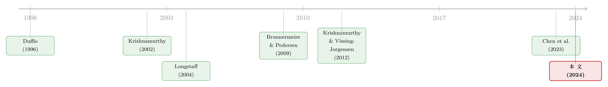

央行的「合格清单」：一只债券一旦能抵押，会发生什么？
本文读的是 Pelizzon, Riedel, Simon & Subrahmanyam (2024, JFE)：当欧洲央行把一只公司债放进它的「合格抵押品清单」，这只债券就被悄悄加了一层「类现金」属性——它在证券借贷市场上更活跃了，收益率下降了 4.6–20 bps，而最妙的是，这层溢价的大小取决于这只债券能不能在借贷市场上被「倒腾」出去。一纸清单，牵动了抵押品市场、债券二级市场、乃至发债公司的资本结构。
1 引言：一张清单，为什么值得写一整篇 JFE
2020 年 3 月，新冠把市场打懵的时候，美联储 (Fed) 急匆匆地推出了一级、二级市场公司信贷便利 (Primary and Secondary Market Corporate Credit Facilities)，第一次大规模地把公司债拉进了自己的货币政策操作里。这是一件新鲜事，市场屏息观望：让公司债更容易被当作抵押品，到底会怎样改变债券的价格、流动性，以及公司借钱的方式？
但如果你把目光投向大西洋的另一边，会发现这个「新鲜事」其实一点都不新鲜。欧洲央行 (European Central Bank, ECB) 自 1999 年欧元诞生那天起，就一直把公司债当成一类重要的合格抵押品 (eligible assets, EA) 来接受。也就是说，美联储 2020 年才小心翼翼试水的东西，欧元区已经平平淡淡地做了二十多年。
这就给研究者递上了一个绝佳的「历史平行样本」。本文四位作者——Pelizzon、Riedel、Simon 与 Subrahmanyam——正是抓住了这个机会，要把一个看起来枯燥的制度细节问到底：当一只公司债被列入欧元体系的「合格抵押品清单」，到底会发生什么？
注意，这里讨论的不是「央行下场买债」（那是量化宽松，比如 ECB 后来的 CSPP）。本文研究的是更低调、却日复一日在运转的常规货币政策工具——抵押品合格性 (collateral eligibility)：央行不掏钱买你的债，但允许银行拿你的债去它那儿做抵押、换取隔夜资金。这一字之差，是这篇论文全部张力的来源。
2 制度背景：什么叫「能抵押」，为什么这么重要
要理解这篇文章，先得搞清楚欧元体系的抵押品框架 (Eurosystem Collateral Framework, ESCF) 是怎么运转的。
ECB 有三件货币政策工具：公开市场操作 (open market operations, OMOs)、最低准备金要求，以及常备便利 (standing facilities, SFs)。和本文最相关的是常备便利里的边际贷款便利 (marginal lending facility)——银行可以在隔夜把合格抵押品押给央行，换回现金。这套机制的基石，就是那张「合格抵押品清单」（EA 清单）。
ECB 的清单有几个与众不同的地方。其一，它的口袋特别大：日均约有 25,000 只证券在清单上，涵盖政府债、有担保和无担保的银行债、资产支持证券，还有公司债——而且接受的信用评级跨度很宽，从 AAA 一直下探到 BBB（ECB 把评级分成三档「信用步级」：Step 1 是 AAA–AA，Step 2 是 A，Step 3 是 BBB）。其二，它是少数几家「单一清单」央行之一：同一张清单既用于 OMO，也用于常备便利，这让银行接入这条流动性通道变得异常简单。在样本期内，公司债占到所有质押资产的约 10%，价值约 1.8 万亿欧元；其中符合合格条件的公司债约占全部资产的 6%，日均 1,450 只。
但真正关键的一步，藏在一个欧美差异里。在美国，公司债有一个活跃的私人回购 (repo) 市场，你想用债券融资，去回购市场就行。而在欧元区，公司债几乎没有像样的私人回购市场。 那欧元区的银行想拿公司债去「倒腾」流动性怎么办？答案是两条路：要么押给 ECB 的边际贷款便利换现金，要么去证券借贷 (securities lending, SL) 市场——把债券借出去收一笔费用，或者借进来用作他途。
这正是全文的「枢纽」：在欧元区，SL 市场扮演了一个私人回购市场的替身，是抵押品的二级市场。于是「合格性」这件事，就同时牵动了两个市场——ECB 的隔夜贷款便利（一级抵押品需求），和 SL 这个抵押品货币市场（二级抵押品需求）。这两个市场之间的「溢出效应」，是作者声称的第一个原创贡献。
还有一个制度细节值得一提：和美联储不同，欧元区的银行去 ECB 边际贷款便利借钱，没有「污名」(stigma)——Lee 和 Sarkar (2018) 把这归因于 ECB 清晰的沟通和只披露总量、不披露个体身份的政策。这让这条隔夜通道被更广泛地使用，也让「合格性」的经济意义更纯粹。
3 识别策略：160 个「错峰」事件，胜过一次大新闻
讲清楚了制度，接着，一个自然的问题是：怎么干净地识别出「合格性」这一件事的因果效应？
很多研究抵押品政策的事件研究 (event study)，盯的是某一个单一的政策公告日——比如某天央行突然宣布某类资产合格或不合格。这种做法有个老毛病：那一天市场上可能同时发生着别的事，你分不清究竟是哪件事推动了价格。
本文的巧妙之处，在于它利用了 ECB 清单的一个独有特征：ECB 会逐只地、在不同时间点把公司债加进清单，作者因此能精确地识别出每一只债券、乃至每一家发债公司「第一次被纳入」的确切日期。聚焦 2010–2016 年（截止于 2016 年 6 月 CSPP 启动之前，刻意避开量化宽松，把「合格性效应」和「央行买债效应」分干净），作者一共找到了 160 个错峰发生的合格性事件，每个事件里都有多只债券同时被处理。
这种错峰事件 (staggered events) 设计，比单一公告日的优势是显而易见的：当处理时点散布在六年里、共 160 次，任何同期的市场趋势就很难系统性地「假装」成处理效应——你不可能要求那 160 个不同的日子都恰好撞上同一个干扰。这让识别比单事件研究稳健得多。
当然，错峰双重差分 (staggered difference-in-differences) 这几年正被反复敲打。Baker、Larcker 和 Wang (2022) 等人指出，当处理效应随时间异质时，传统的双向固定效应估计量可能被「已处理组当对照组」的比较污染。作者意识到了这一点，并做了相应的稳健性处理——这是评判这类论文时第一个要盯住的地方，下文 Q&A 会再谈。
为什么偏偏选公司债，而不是别的资产？作者解释得很坦诚：欧元区的主权债在发行时就自动进了合格清单，没有「被纳入」这个事件可供研究；银行债则受到银行间交叉持有等一堆混杂因素的干扰；而非金融公司债，既有清晰可辨的「首次纳入日」，又相对干净，是研究「合格性」这个概念最合适的资产类别。再加上前面说的——公司债在欧元区几乎没有私人回购市场——这使得 SL 市场的反应可以被直接观测到，不会被回购市场的活动稀释。
为了构造可比的处理组与对照组，作者用了粗化精确匹配 (coarsened exact matching, Iacus, King & Porro, 2012) 这类方法，把「即将合格」但尚未合格的债券作为对照，再在第 6 节专门检验平行趋势 (parallel trends) 假设、并控制可能驱动「合格性选择」的公司基本面。
4 数据
数据的起点是 ECB 公布的合格抵押品清单（单一清单自 2007 年起施行）。作者把这张清单和三类信息合并起来：
- 债券层面特征——发行人、评级、期限、票息等；
- 价格数据——二级市场收益率与买卖价差 (bid-ask spread)，后者用来度量流动性；
- 证券借贷市场活动数据——借贷的数量与成本（借券费）。
观测单位是「债券 × 时间」（在公司层面的分析里则是「公司 × 季度」）。样本期 2010–2016，核心事件数 160 个。一个值得记住的描述性事实是：在被考察的债券里，有超过 50% 在被纳入合格清单的当天或之后，才第一次变得「可借贷」——也就是说，合格性本身把一大批原本在 SL 市场上「借不到」的债券，变成了可交易的抵押品。
5 主要结果：一层「类现金」属性，是怎么传导的
作者把合格性的效应拆成四条链路，环环相扣。
第一，证券借贷市场被「激活」了。 对那些原本就可借贷的债券，纳入合格清单触发了对合格资产供给与需求的双向上升：银行有动力去 SL 市场把手里不合格的资产「换成」合格持仓，从而扩大对央行的融资能力；而养老金、保险、共同基金这些长期买入持有的投资者，则乐于把被动持仓借出去赚一笔额外收入。结果是，单位证券的借入成本下降了，但因为需求端的大幅跳升，债券持有人的总借贷收入反而上升。
第二，也是全文最漂亮的结果——合格性溢价 (eligibility premium)。 作者发现，相比尚未合格的同类债券，合格债券的收益率显著、稳健地下降了 4.6–20 bps。这个收益率的下降，就是所谓的「合格性溢价」：它源于债券作为抵押品的流动性服务或可替代性 (fungibility)——一旦能押给 ECB 换隔夜资金，债券就获得了「类现金 (cash-like)」的特征，投资者愿意为这层便利付出更高的价格（即接受更低的收益率）。
这跟国债里被反复研究的「便利收益 (convenience yield)」是同一种逻辑：资产因为「好用」（安全、可抵押、可变现）而被定价得更贵。关于这条思路在国债与「孪生」债券上的精彩演绎，可参见《绿色溢价真的归零了吗？——藏在德国孪生国债里的两种「便利收益」》与《无风险国债是「制造」出来的：被保护的是谁，被牺牲的又是谁》。
但真正关键的一步在于：这层溢价的大小，取决于债券能不能在 SL 市场上被「倒腾」出去。 作者把债券分成「可借贷」与「不可借贷」两组，发现合格性带来的收益率下降在不可借贷那组更大——达到 14 bps。直觉很顺：如果一只债券能在 SL 市场上自由借贷，那么 SL 市场本身就缓解了对它作为抵押品的需求压力，价格（收益率）的反应因此被「熨平」了；而对那些借不到的债券，所有的需求压力都压在了价格上，溢价自然更大。SL 市场，成了合格性溢价的一个减压阀。 作者还提醒，由于纳入清单这件事本身在很大程度上是市场可以预期的，这些估计很可能低估了合格性的真实影响。
第三，流动性的反应耐人寻味。 用买卖价差度量，作者发现：不可借贷债券的流动性改善了，而可借贷债券的流动性略微恶化。这个看似矛盾的结果，恰好同时印证了两条机制——一边是 Brunnermeier 和 Pedersen (2009) 那条著名的「融资流动性 ↔ 市场流动性」正向链接（合格性放松了融资约束，传导到市场流动性），另一边则是二级现金市场上的「稀缺效应 (scarcity effect)」（可借贷的合格债券被抢着持有、惜售，反而变得难买难卖）。
第四，反转出现在公司层面。 既然合格性抬高了债券价格、改善了融资条件，发债公司会不会「顺杆爬」？答案是会。作者发现，在公司首次有债券被纳入合格清单后的四个季度里，公司系统性地把债务结构从银行贷款转向债券、提高了总体债务水平、并发行了期限更长的债券（后者很可能是被偏好长久期合格候选债的长期投资者「点单」点出来的）。换句话说，央行的一纸清单，最终改变了实体公司怎么借钱、借多久、向谁借。这对银行其实是双赢：长期投资者接过了债权，既给银行的资产负债表去了杠杆，又腾出了空间去给更新、更具创新性的项目放贷。
把这四条链路串起来，全文的核心论点就立住了：公司债的合格性，放松了「抵押品供给有限」这个约束，从而改善了市场的整体运转。 而 SL 市场——这个在欧元区替代了私人回购的抵押品二级市场——是整条传导链里那个被以往文献忽视、却至关重要的「枢纽」。
6 文献脉络：从「回购特殊性」到「可抵押性溢价」
那么，这篇文章站在哪条研究脉络的肩膀上？
故事的源头，是资产定价里关于「某些资产因为好用而更贵」的一长串研究。Duffie (1996) 与 Jordan 和 Jordan (1997) 研究回购市场的「特殊性 (specialness)」——某些债券在回购市场上能借到更便宜的钱；Krishnamurthy (2002) 量化了「新券—老券」利差；Longstaff (2004) 记录了美国国债里的便利收益；Krishnamurthy 和 Vissing-Jorgensen (2012) 则把它上升为「对国债的总需求」这一宏观图景。这条线告诉我们：流动性、安全性、可抵押性，都是会被市场明码标价的「便利」。
接着，Brunnermeier 和 Pedersen (2009) 把「融资流动性」与「市场流动性」正式连了起来——这正是本文解释流动性结果时所倚重的理论支柱。
再然后，研究开始直接触碰「可抵押性」本身：Ai 等 (2020) 在股票横截面里找到了「可抵押性溢价」；Chen 等 (2023) 则在中国公司债市场里研究了「可质押性与资产价格」。本文与 Chen 等 (2023) 是近邻，但作者特意划清了界限：Chen 等研究的是私人回购市场的可质押性，而本文研究的是央行的合格性——后者不受逐利动机左右，在数量和价格上都更可靠、更稳定，甚至会在市场遭遇资金冲击时主动「托底」。

与此同时，本文也接入了「货币政策如何影响金融市场」这条大河。Allen 和 Moessner (2012) 记录了全球金融危机后抵押融资取代无担保拆借的趋势；Bindseil 等 (2017) 系统讲解了欧元体系的抵押品框架；而近年的大量研究——从 Krishnamurthy 和 Vissing-Jorgensen (2011) 对量化宽松渠道的拆解，到围绕 CSPP 的一系列工作（Grosse-Rueschkamp 等, 2019；Arce 等, 2020；Galema 和 Lugo, 2021 等）——大多聚焦于非常规货币政策、也就是央行真金白银地买债。本文的差异化定位由此凸显：它研究的是一个旨在提供银行融资流动性、而非直接压低长端利率的常规工具，并且第一次把视线投向了 SL 这个抵押品货币市场。这，就是它在文献版图上的坐标。
顺带一提，证券借贷市场本身近年也成了一个独立的研究富矿——借券费里藏着信息、藏着博弈。对这一面感兴趣的读者，可参见《把信息卖给你的对手：证券借贷里那场无声的博弈》。
7 评论与延伸（Q&A + 研究方向）
(a) 几个可能的疑问
Q：「合格性」和「央行买债（QE/CSPP）」到底差在哪，为什么非要分开？
差在央行掏不掏钱。合格性只是允许银行拿债去做抵押换隔夜资金，央行的资产负债表并不会因此买入这只债；而 CSPP 是央行直接下场买。本文刻意把样本截到 2016 年 6 月 CSPP 启动之前，就是为了把这两种效应剥离开——否则你看到的收益率下降，可能是「能抵押」和「央行在买」两件事的混合，根本分不清谁是谁。
Q：合格债券收益率下降，会不会只是因为它们本来就是「更好」的债券（评级更高、更安全），而不是合格性本身的功劳？
这正是识别上最大的威胁——「合格性选择」。如果优质债券更容易被纳入清单，那收益率差异就是基本面差异、而非合格性效应。作者的防线有三层：用错峰的 160 个事件而非单一公告日、用粗化精确匹配构造可比对照组、并在专门一节里检验平行趋势、控制可能驱动合格性的公司基本面。是否完全堵死，见仁见智，但比单事件研究稳健得多。
Q：为什么「不可借贷」的债券，合格性溢价反而更大？这不反直觉吗？
恰恰相反，这是全文最自洽的一处。如果一只债券能在 SL 市场上自由借贷，SL 市场就充当了抵押品需求的「减压阀」，把价格压力分流掉了，所以收益率反应小（
< 14 bps）；而借不到的债券无处分流，全部压力都体现在价格上，溢价自然更大（14 bps）。这个横截面差异，本身就是「SL 市场缓解需求压力」这一机制的直接证据。
Q：流动性的结果——可借贷债券流动性「变差」——是不是模型设定出了问题？
不是 bug，是 feature。它反映的是「稀缺效应」：合格又可借贷的债券被投资者抢着持有、惜售，二级现金市场上反而更难买难卖，买卖价差走阔。与此同时，不可借贷债券因融资约束放松而流动性改善（Brunnermeier-Pedersen 渠道）。两个方向相反的力量同时存在，恰恰说明两条机制都在起作用。
Q：结果能外推到美联储 2020 年的那套便利吗？
方向上能，幅度上要谨慎。欧元区是个独特的实验室——公司债几乎没有私人回购市场，所以 SL 市场的反应能被干净地观测到；而美国有活跃的回购市场，许多抵押品需求会在回购市场被吸收，SL 市场的信号会被稀释。所以本文的「量级」未必能直接搬到美国，但「合格性放松抵押品供给约束、改善市场运转」这个定性结论，对理解美联储的工具是有借鉴意义的。
Q：作者说估计值可能「低估」了真实影响，这话怎么理解？
因为纳入清单这件事在很大程度上是可被市场预期的。如果聪明的市场参与者提前几天、几周就开始 price in 这只债券「即将合格」，那么以「正式纳入日」为事件点测出来的跳变，只是真实效应里「未被预期」的那一部分，自然偏小。
(b) 几个可能的研究问题与提案
1. 把「合格性溢价」搬到外资持有人维度上去。
【经济故事】本文已指出，在欧元区一体化的资本市场里，跨境投资者买入合格债券，等于间接支持了 ECB 推动资本市场联盟的目标。一个自然的延伸是：当一只债券变得合格，谁在买它？是本国银行、本国长期投资者，还是外资？不同持有人对「合格性溢价」的贡献是否不同？【可行性】中。需要债券层面的持有人结构数据（如 ECB 的 SHS 持仓数据库、或 Boermans & Vermeulen 2020 用过的那类数据）叠加本文的合格性事件，识别上可沿用同一套错峰事件框架。
2. 合格性与公司债流动性的「外溢」：不合格债券会被带动吗？
【经济故事】本文已发现，能借贷会改善非金融公司债（包括一些不合格债券）的整体流动性。可以更系统地问：同一发行人旗下，一只债券变合格，会不会通过做市商的库存管理、或投资者的组合再平衡，改变该发行人其他债券的流动性与价格？【可行性】高。同一发行人内部的债券对子提供了天然的处理/对照，可用债券层面买卖价差数据直接检验，识别干净。
3. 危机期的「合格性」作为流动性托底工具。
【经济故事】作者在脚注里点出，央行合格性也许能缓解类似 2020 年美债回购市场的失灵 (Duffie, 2020)。但本文样本停在 2016 年。一个高价值的方向是：在 2020 年新冠冲击中，ECB 临时放宽合格性标准（降评级门槛等）的那些事件，对公司债流动性与收益率的「应急」效应有多大？【可行性】中。需要 2020 年的高频债券与 SL 数据，且要与同期的 PEPP/CSPP 购买分离——分离是难点，但临时性的、规则化的合格性调整（如评级门槛变动）提供了相对干净的断点。
4. 期限选择：长久期合格候选债的「点单效应」。
【经济故事】本文发现公司在首次合格后倾向于发行更长期限的债券，并猜测这是长期投资者「点单」的结果。能不能把这个机制坐实？【可行性】中。需要一级市场发行明细 + 投资者认购数据；可比较「有合格债券在外」与「没有」的发行人在首发期限上的差异，识别策略可借用本文的首次合格事件。
参考文献
- Ai, H., Li, J.E., Li, K., Schlag, C. (2020). The collateralizability premium. Review of Financial Studies 33(12), 5821–5855.
- Allen, W.A., Moessner, R. (2012). The Liquidity Consequences of the Euro Area Sovereign Debt Crisis. BIS Working Papers 390.
- Baker, A.C., Larcker, D.F., Wang, C.C. (2022). How much should we trust staggered difference-in-differences estimates? Journal of Financial Economics 144(2), 370–395.
- Bindseil, U., Corsi, M., Sahel, B., Visser, A. (2017). The Eurosystem Collateral Framework Explained. ECB Occasional Paper Series 189.
- Brunnermeier, M.K., Pedersen, L.H. (2009). Market liquidity and funding liquidity. Review of Financial Studies 22(6), 2201–2238.
- Chen, H., Chen, Z., He, Z., Liu, J., Xie, R. (2023). Pledgeability and asset prices: Evidence from the Chinese corporate bond markets. Journal of Finance.
- Duffie, D. (1996). Special repo rates. Journal of Finance 51(2), 493–526.
- Iacus, S.M., King, G., Porro, G. (2012). Causal inference without balance checking: Coarsened exact matching. Political Analysis 20(1), 1–24.
- Jordan, B.D., Jordan, S.D. (1997). Special repo rates: An empirical analysis. Journal of Finance 52(5), 2051–2072.
- Krishnamurthy, A. (2002). The bond/old-bond spread. Journal of Financial Economics 66(2–3), 463–506.
- Krishnamurthy, A., Vissing-Jorgensen, A. (2012). The aggregate demand for treasury debt. Journal of Political Economy 120(2), 233–267.
- Lee, H., Sarkar, A. (2018). Is Stigma Attached to the European Central Bank's Marginal Lending Facility? Working Paper.
- Longstaff, F.A. (2004). The flight-to-liquidity premium in U.S. Treasury bond prices. Journal of Business 77(3).
- Pelizzon, L., Riedel, M., Simon, Z., Subrahmanyam, M.G. (2024). Collateral eligibility of corporate debt in the Eurosystem. Journal of Financial Economics 153, 103777.